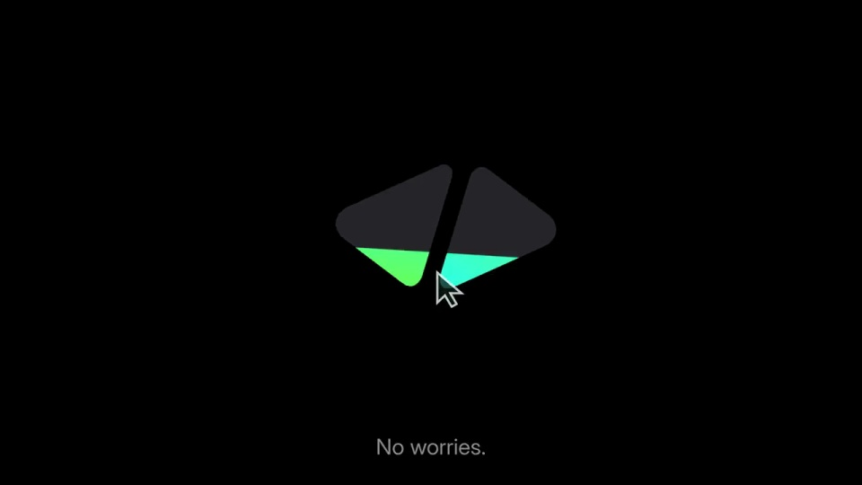
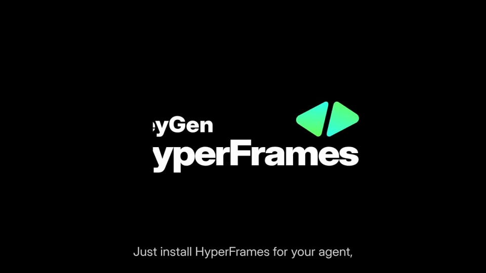
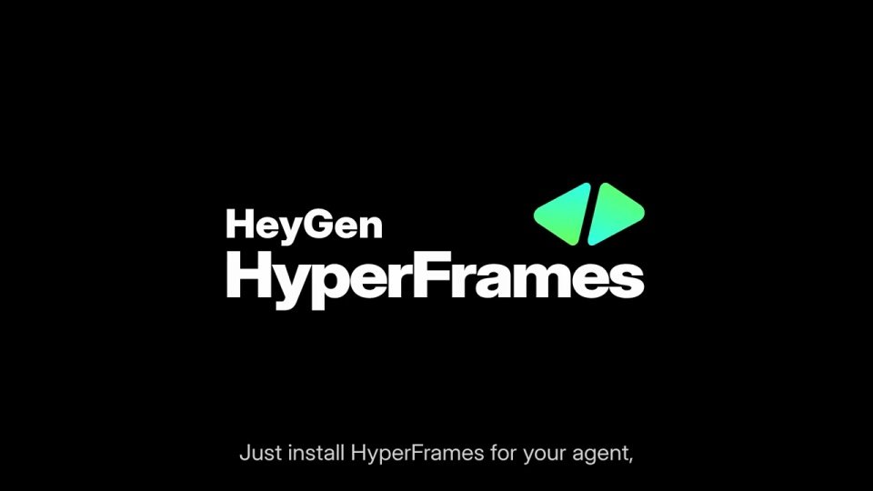

HeyGen / V342
状态词与 HyperFrames
状态词用低亮度等宽字快速变化，接着切为暗色双三角。绿色从下方向上填入标志，再让白色品牌字标展开。
构图与编排 可播放 · 可替换内容
整体编排规则示例
查看 HTML 源码
<!doctype html><html lang="zh-CN"><meta charset="utf-8"><meta name="viewport" content="width=device-width,initial-scale=1"><title>状态词与 HyperFrames · sequence</title><style>html,body{margin:0;width:100%;height:100%;overflow:hidden;background:#000000}canvas{display:block;width:100%;height:100%;object-fit:contain}</style><body data-mode="sequence"><canvas width="1000" height="600"></canvas><script src="data.js"></script><script src="common.js"></script><script src="scene.js"></script><script src="bridge.js"></script></body></html>画面元素状态词双三角标志绿色填充品牌字标字幕
MOTION LANGUAGE
动作与构图
局部动作 · 构图规则
01
从工作状态切到产品标志
从工作状态切到产品标志规则示例
查看 HTML 源码
<!doctype html><html lang="zh-CN"><meta charset="utf-8"><meta name="viewport" content="width=device-width,initial-scale=1"><title>状态词与 HyperFrames · sequence</title><style>html,body{margin:0;width:100%;height:100%;overflow:hidden;background:#000000}canvas{display:block;width:100%;height:100%;object-fit:contain}</style><body data-mode="clip" data-start="2.4" data-end="4.8"><canvas width="1000" height="600"></canvas><script src="data.js"></script><script src="common.js"></script><script src="scene.js"></script><script src="bridge.js"></script></body></html>状态词用低亮度等宽字快速变化，接着切为暗色双三角。绿色从下方向上填入标志，再让白色品牌字标展开。
02
留读阶段只更新字幕
字标就位后保持稳定，绿色继续作为唯一高饱和色。字幕位于底部安全区，不随主标志缩放。替换产品时保留短促建立、长段停留的比例。
SEQUENCE
段落与节奏
点击段落，定位到上方编排示意。





画面参考 · 离散静帧
KEEP THE RELATIONSHIPS
制作其他主题
- 替换产品名、标志和底部短字幕，主动作集中在前四秒。
制作约束
状态词 / 双三角标志 / 绿色填充 / 品牌字标 / 字幕
- 状态词用低亮度等宽字快速变化，接着切为暗色双三角。绿色从下方向上填入标志，再让白色品牌字标展开。
- 字标就位后保持稳定，绿色继续作为唯一高饱和色。字幕位于底部安全区，不随主标志缩放。替换产品时保留短促建立、长段停留的比例。